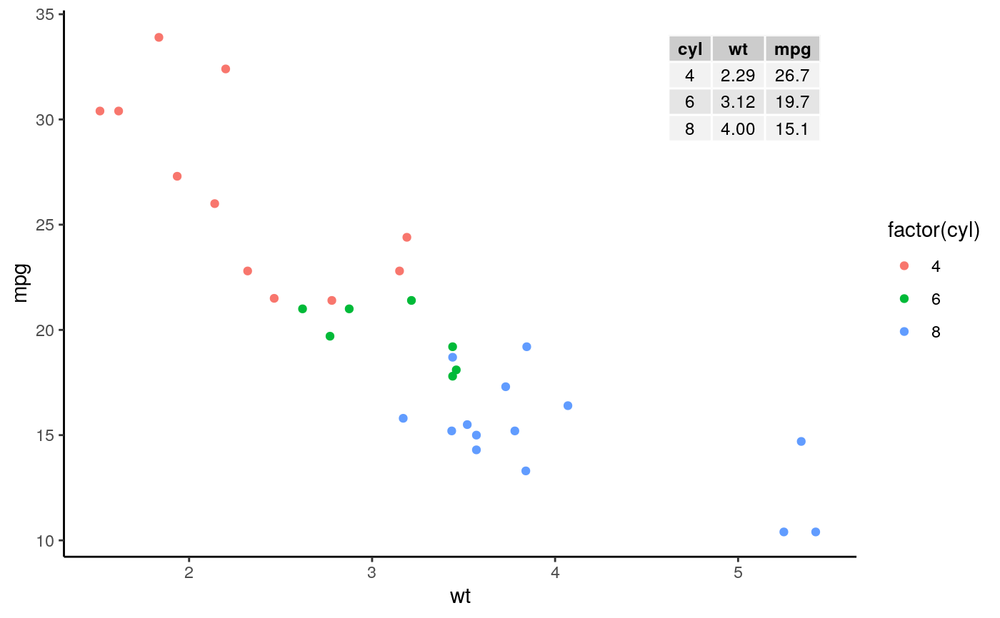
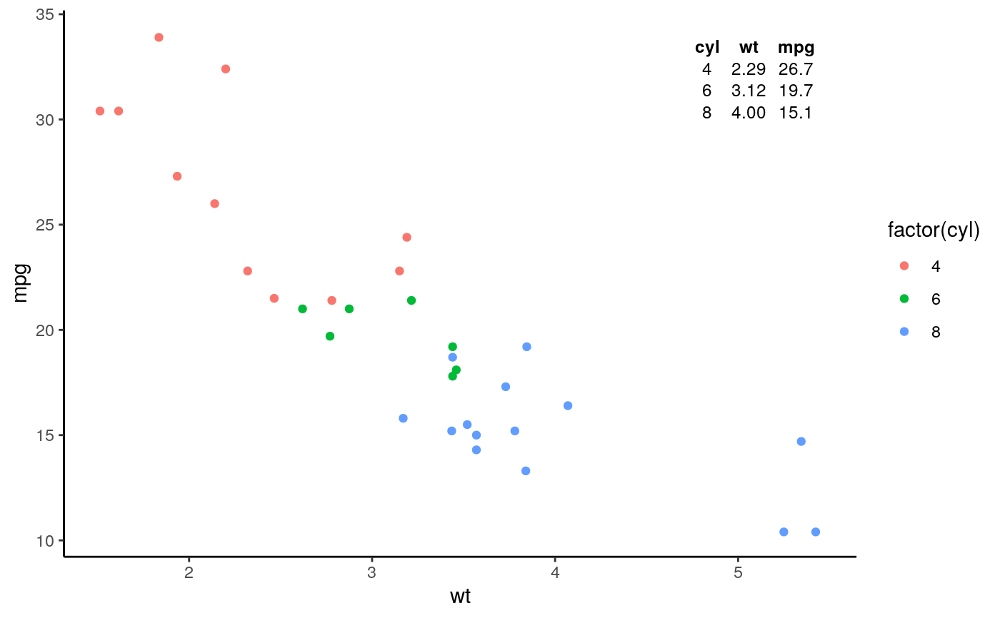
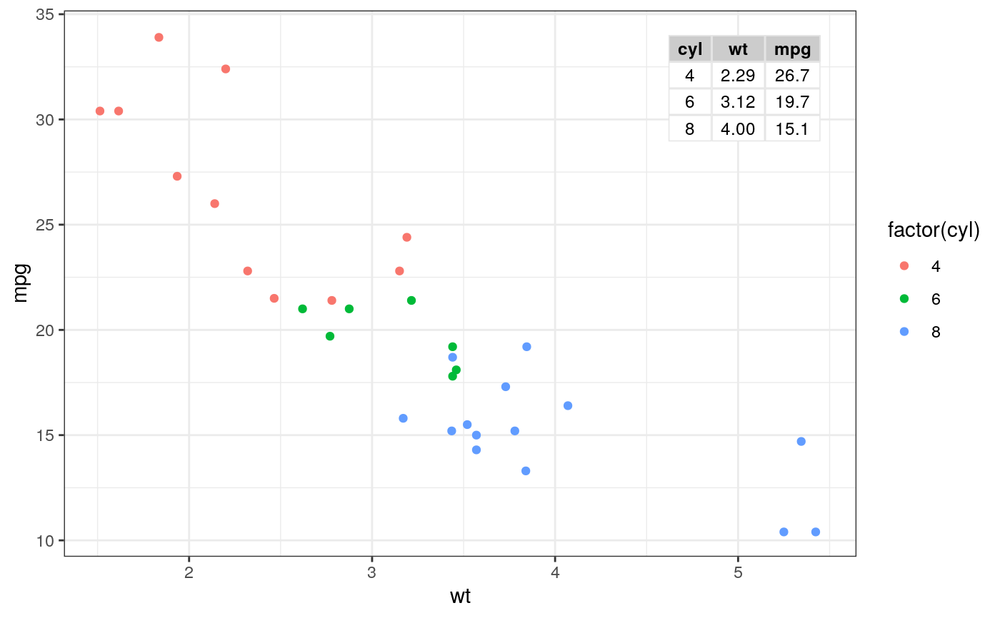
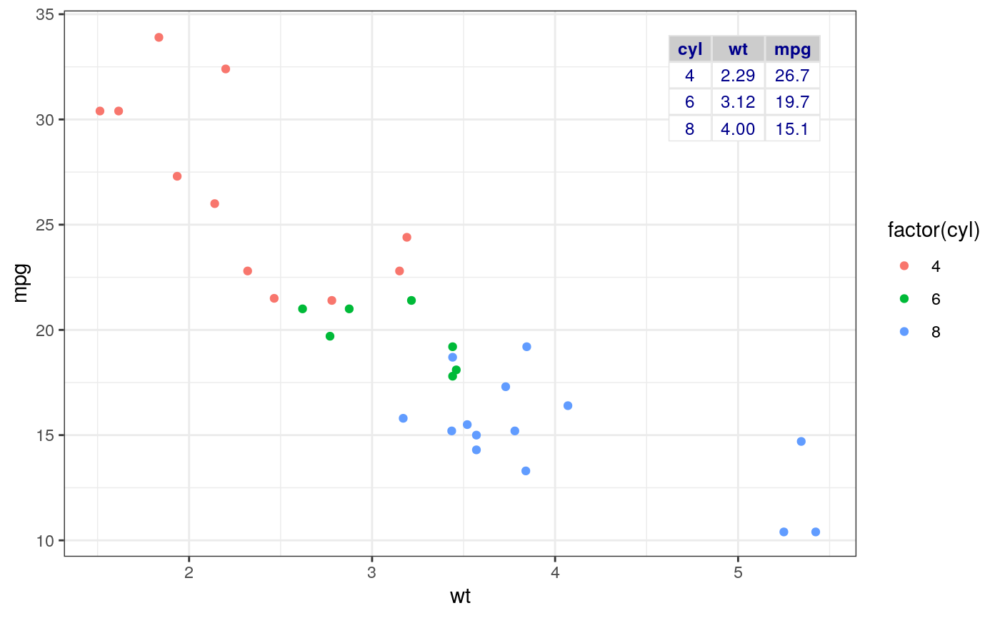
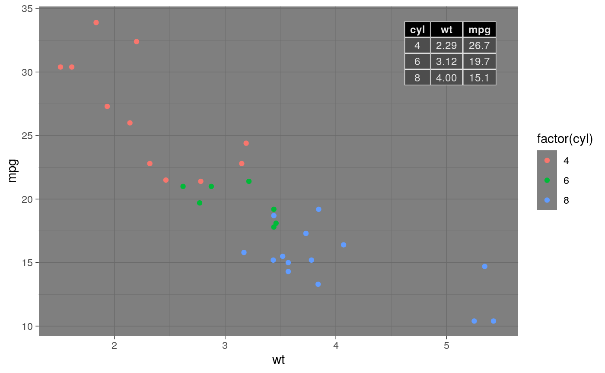
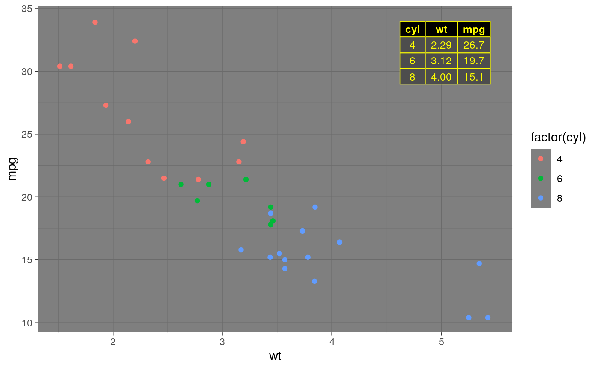
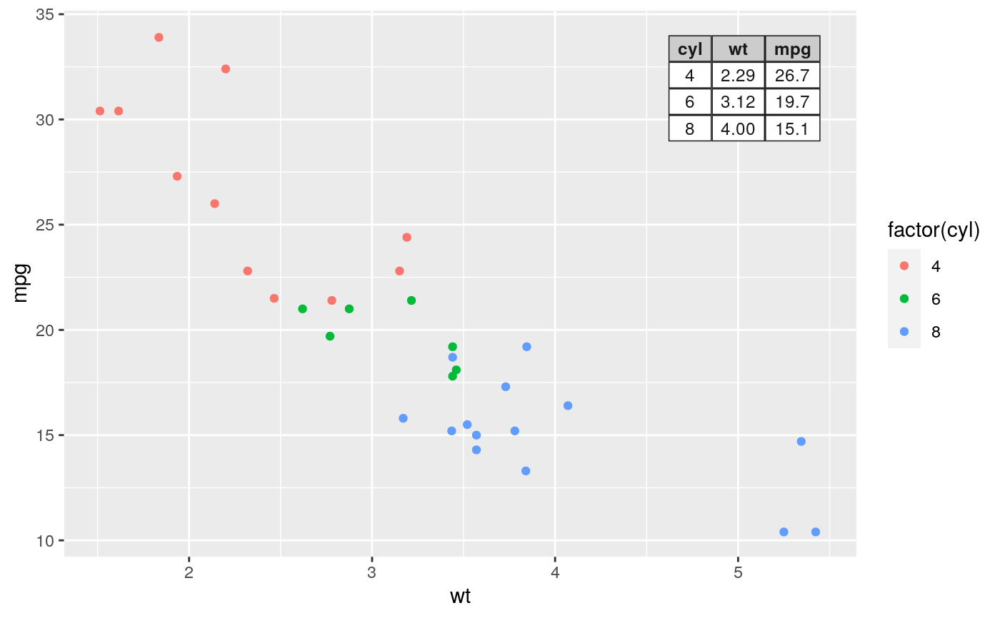
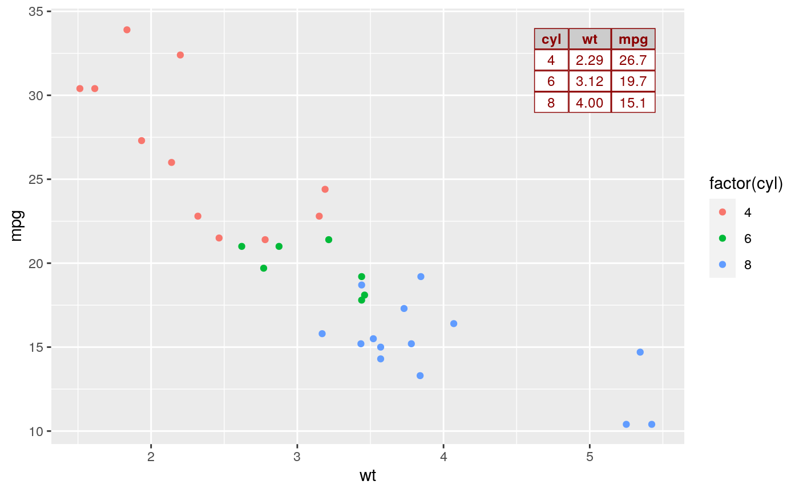
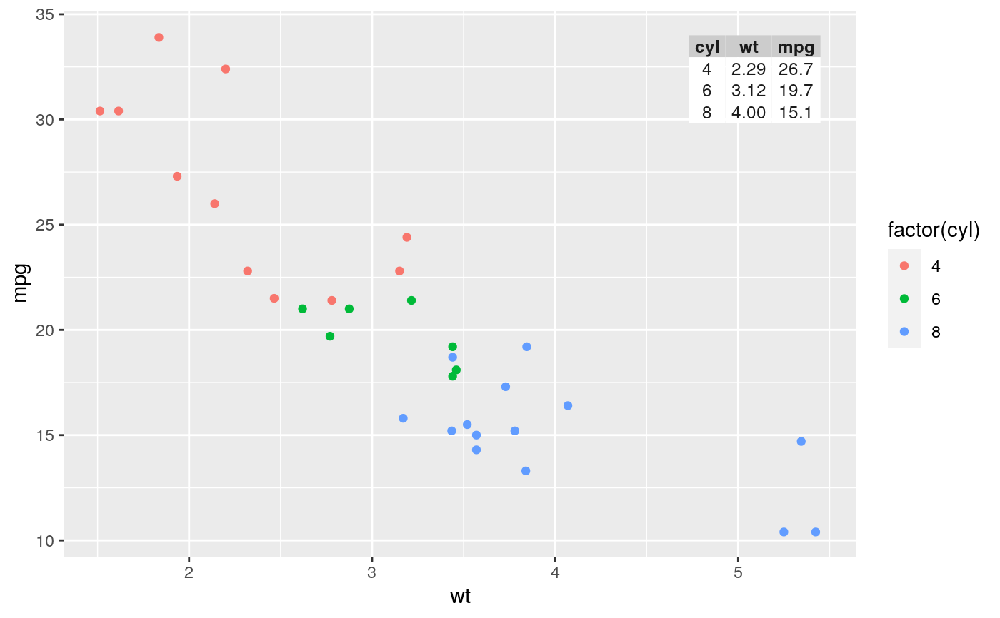
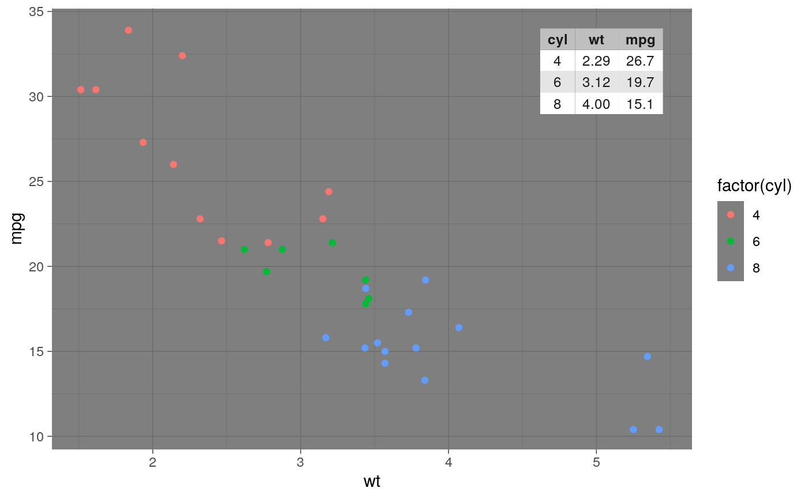

ttheme_gtdefault.RdAdditional theme constructors for use with geom_table.
ttheme_gtdefault( base_size = 10, base_colour = "black", base_family = "", parse = FALSE, padding = unit(c(0.8, 0.6), "char"), ... ) ttheme_gtminimal( base_size = 10, base_colour = "black", base_family = "", parse = FALSE, padding = unit(c(0.5, 0.4), "char"), ... ) ttheme_gtbw( base_size = 10, base_colour = "black", base_family = "", parse = FALSE, padding = unit(c(0.8, 0.6), "char"), ... ) ttheme_gtplain( base_size = 10, base_colour = "black", base_family = "", parse = FALSE, padding = unit(c(0.8, 0.6), "char"), ... ) ttheme_gtdark( base_size = 10, base_colour = "grey90", base_family = "", parse = FALSE, padding = unit(c(0.8, 0.6), "char"), ... ) ttheme_gtlight( base_size = 10, base_colour = "grey10", base_family = "", parse = FALSE, padding = unit(c(0.8, 0.6), "char"), ... ) ttheme_gtsimple( base_size = 10, base_colour = "grey10", base_family = "", parse = FALSE, padding = unit(c(0.5, 0.4), "char"), ... ) ttheme_gtstripes( base_size = 10, base_colour = "grey10", base_family = "", parse = FALSE, padding = unit(c(0.8, 0.6), "char"), ... )
| base_size | numeric, default font size. |
|---|---|
| base_colour | default font colour. |
| base_family | default font family. |
| parse | logical, default behaviour for parsing text as plotmath. |
| padding | length-2 unit vector specifying the horizontal and vertical padding of text within each cell. |
| ... | further arguments to control the gtable. |
A list object that can be used as ttheme in the
construction of tables with functions from package 'gridExtra'.
Depending on the theme, the base_colour, which is
mapped to the colour aesthetic if present, is applied to only the
text elements, or to the text elements and rules. The difference is
exemplified below.
These theme constructors are wrappers on
gridExtra::ttheme_default() and gridExtra::ttheme_minimal().
They can also be used with grid.table if desired.
library(dplyr) library(tibble) mtcars %>% group_by(cyl) %>% summarize(wt = mean(wt), mpg = mean(mpg)) %>% ungroup() %>% mutate(wt = sprintf("%.2f", wt), mpg = sprintf("%.1f", mpg)) -> tb#>df <- tibble(x = 5.45, y = 34, tb = list(tb)) # Same as the default theme constructor ggplot(mtcars, aes(wt, mpg, colour = factor(cyl))) + geom_point() + geom_table(data = df, aes(x = x, y = y, label = tb), table.theme = ttheme_gtdefault) + theme_classic()# Minimal theme constructor ggplot(mtcars, aes(wt, mpg, colour = factor(cyl))) + geom_point() + geom_table(data = df, aes(x = x, y = y, label = tb), table.theme = ttheme_gtminimal) + theme_classic()# A theme with white background ggplot(mtcars, aes(wt, mpg, colour = factor(cyl))) + geom_point() + geom_table(data = df, aes(x = x, y = y, label = tb), table.theme = ttheme_gtbw) + theme_bw()# Default colour of theme superceded by aesthetic constant ggplot(mtcars, aes(wt, mpg, colour = factor(cyl))) + geom_point() + geom_table(data = df, aes(x = x, y = y, label = tb), table.theme = ttheme_gtbw, colour = "darkblue") + theme_bw()# A theme with dark background ggplot(mtcars, aes(wt, mpg, colour = factor(cyl))) + geom_point() + geom_table(data = df, aes(x = x, y = y, label = tb), table.theme = ttheme_gtdark) + theme_dark()# Default colour of theme superceded by aesthetic constant ggplot(mtcars, aes(wt, mpg, colour = factor(cyl))) + geom_point() + geom_table(data = df, aes(x = x, y = y, label = tb), table.theme = ttheme_gtdark, colour = "yellow") + theme_dark()# A theme with light background ggplot(mtcars, aes(wt, mpg, colour = factor(cyl))) + geom_point() + geom_table(data = df, aes(x = x, y = y, label = tb), table.theme = ttheme_gtlight)# Default colour of theme superceded by aesthetic constant ggplot(mtcars, aes(wt, mpg, colour = factor(cyl))) + geom_point() + geom_table(data = df, aes(x = x, y = y, label = tb), table.theme = ttheme_gtlight, colour = "darkred")# Default colour of theme superceded by aesthetic constant ggplot(mtcars, aes(wt, mpg, colour = factor(cyl))) + geom_point() + geom_table(data = df, aes(x = x, y = y, label = tb), table.theme = ttheme_gtsimple)# Default colour of theme superceded by aesthetic constant ggplot(mtcars, aes(wt, mpg, colour = factor(cyl))) + geom_point() + geom_table(data = df, aes(x = x, y = y, label = tb), table.theme = ttheme_gtstripes) + theme_dark()